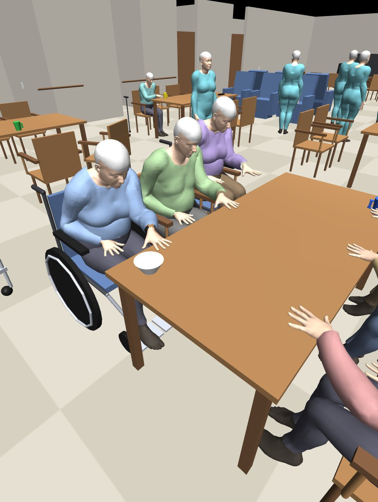
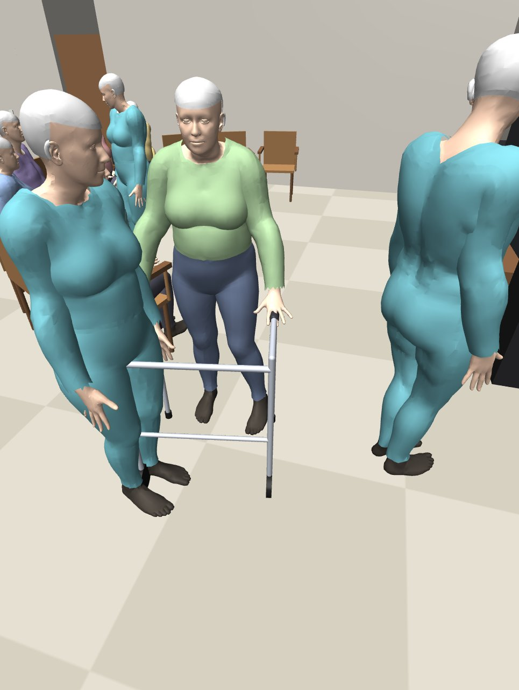

Care robotics · simulation only · Work in progress · simulation platform, no manuscript
Simulators used to test robots among people model pedestrians as generic, cooperative adults. ElderTwin is a MuJoCo model of a typical Taiwanese adult day-care center (a template, not a particular center) whose virtual older adults follow a timetable, walk with walkers or use wheelchairs, ask a Stretch 4 robot for help by speech and pointing, and react to it. The planned study asks whether the safety ranking of the robot's navigation policies changes when generic pedestrians are replaced by older adults. The platform is built; the pre-specified experiments have not been run, so this page reports no study results.
Mu-Hua Wang · sole developer · project assigned by Prof. Yi-Ting Chen, Department of Computer Science, National Yang Ming Chiao Tung University · 2026–present
Lunch in the simulated day-care center at real-time speed. Older adults eat at the long table while staff walk past the robot, which waits between the tables. A 12-second excerpt (40–52 s) of one 190.8-second run (seed 9001), one of 4 lunch runs recorded, chosen because people pass close to the robot; not a statistic.
All numbers below are listed under "Verified numbers" in the project's FACTS file, with their source (git history and the full test log of 2026-11-17).
full suite, run from a fresh environment on an external drive; 1 failure (a project-bookkeeping check, not program behaviour), 43 skipped
2026-10-16 to 2026-11-16, main branch
source code in 14 modules; 91,512 further lines of tests

Lunch, seen from the Stretch 4 camera. One of 465 photos the simulated robot took in 40 patrol runs, the second of the two “dining together” shots picked for the most visible faces (5 faces; the first had 6); not a statistic.

An older adult walking with a walker among other residents. One of the same 465 photos, the “walking with an aid” shot with the most visible faces (7 faces); not a statistic.
| Part | What it does |
|---|---|
| World | MuJoCo 3.16.0 (pinned); geometric non-penetration of bodies, aids, furniture and the robot |
| Bodies | SMPL-X statistical bodies; slow gait, walkers, wheelchairs, sitting down and standing up, reaching for objects |
| Behaviour | daily timetable; requests by speech and pointing; reactions to the robot; crowd navigation |
| Robot | Hello Robot Stretch 4 model; navigation, yielding, fetch-and-return, handover, contact guard |
| Measurement | contacts and who initiated them, a realistic person tracker, a realism comparison suite, video review, pre-specified analysis |
Planned study 1 compares seven navigation policies (including the robot's shipped controller and one that yields) in four corridor widths, with generic pedestrians and with older adults. Planned study 2 compares strategies for picking up and returning an object an older adult has dropped. I am the sole developer: I set the research questions, made the design decisions and reviewed the results and videos.
In an earlier version of the model, apparent reversals of the corridor safety ranking disappeared once pedestrians' bodies were kept out of the walls: they had depended on a simulation artifact. Whole-body non-penetration was rebuilt before the study is run again.
Scope: simulation only; the virtual older adults are not validated against real older adults; the pre-specified experiments have not been run, so no safety result is reported; when run, the study can show whether the human model changes a simulated safety conclusion, not which policy is safe.